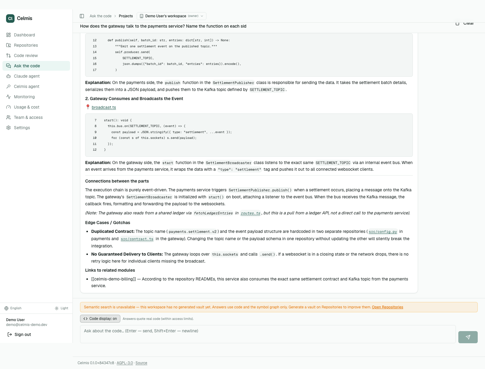
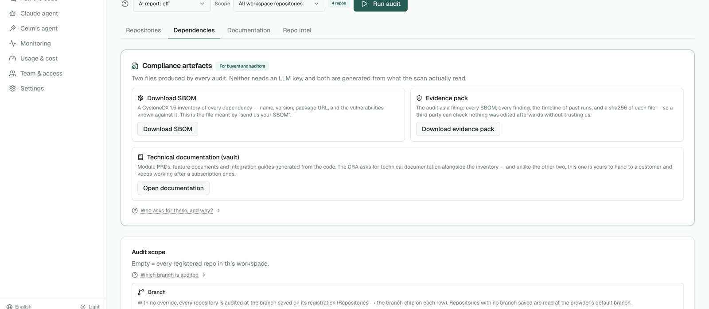
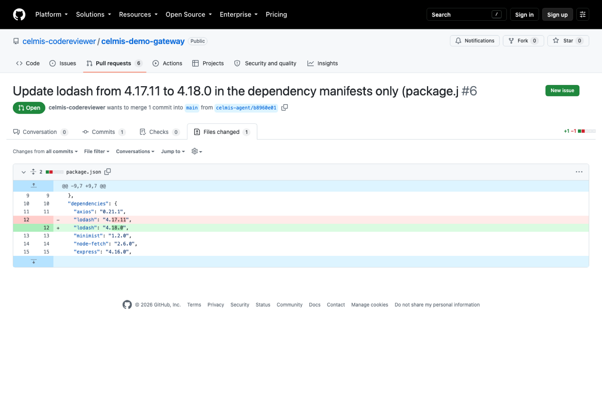
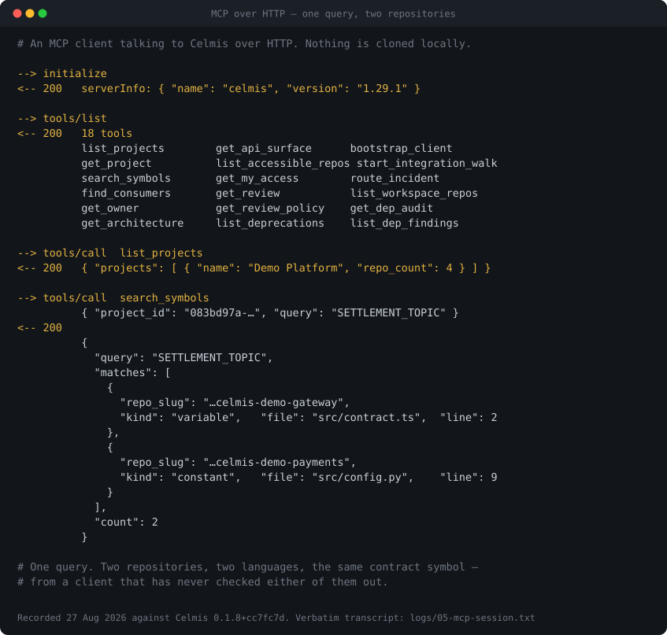
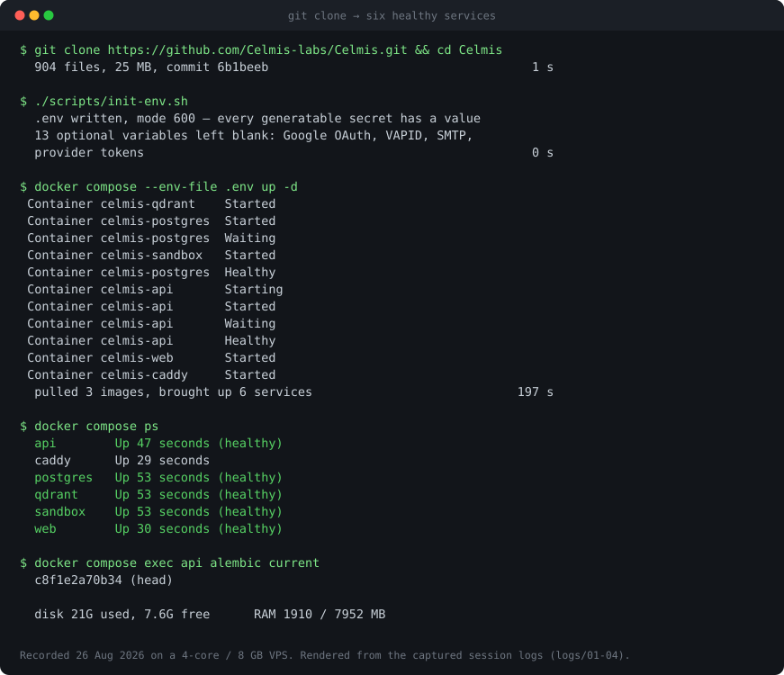

hover a node — its consumers light up
Celmis — one self-hosted place to understand, review, secure and fix code across all of a team's repositories
Understand, review, secure and fix your code. In one place.
For the engineering team that ships the code and answers for it at 3 a.m. Self-hosted, open source, on one machine.
What is Celmis?
Celmis puts everything an engineering team needs to work with its code in one self-hosted place. It indexes all of your repositories once, and every tool reads that same index: understand code nobody documented, with questions across repositories answered with file and line citations; review pull requests with what the change touches beyond its own repository; secure the dependencies with a CVE audit, a CycloneDX SBOM and an evidence pack; and fix what an alert or a finding points at, as a pull request. Coding agents such as Claude Code, Cursor or Codex get the same context over MCP.
It is built for the team that ships the code and answers for it around the clock. Instead of a separate tool for search, review, dependency audit and fixing, each with its own access rules and its own copy of your code, one installation holds them all, on your servers, with your model. The aim is a small team that can run several products and the integrations between them, not a large one struggling to keep two in sync.
Beyond the repository, honestly. Before a merge, the review checks the other repositories for values the change removes that they still hardcode, for deploy files that point at the changed repository, and for code that calls a changed function by the same name, and quotes both sides. These are checks, not a call graph between repositories; that graph is not built yet.
Fix from here is one application of the index, not the whole product. An alert or a dependency finding opens an embedded Claude Code session on your subscription inside your installation; the session edits the code and the runner opens a pull request. On one measured finding that took 220 seconds. A person reviews and merges: Celmis never merges and never deploys.
Celmis does not watch your services; Grafana or whatever you
already run does that, and Celmis starts from the alert it sends. The application
ingests no logs of its own, but the repository ships an optional
observability overlay: one extra compose file brings up Prometheus, Loki,
Promtail and Grafana for every container on that host, with every port bound to
127.0.0.1 and reached over an SSH tunnel.
In the oldest telling, Kelmis was the smelter — one of three who found how to work iron with fire. The index does the reducing here; the surfaces are what work the result.
Why one place works
One index underneath, so every tool reads the same code
A question can be answered across services, a review can look past its own repository and an alert can be routed to its owner only because something already read the code. Celmis builds a symbol graph from your repositories once; every tool reads that one index. Here it answers a question spanning two repositories — tracing the call chain, then noticing, unprompted, that the Kafka topic name is hardcoded in both and that changing one silently breaks the other.
A reviewer that reads only the diff structurally cannot say that. It never had the other repository open.

Eight things people do with it
Index once, then read it from whichever side of the work you are standing on
The alert arrives knowing which repository it belongs to and who owns it. Fix from here takes it from there on your own subscription, and the runner opens a pull request — from whatever device you read it on. alerts and fixing
Ask it. From any device, anywhere, without booking time from an engineer and without a meeting whose only output is a paragraph. ask the code
Every one of those pulls someone experienced out of flow, at the
moment they are already covering. The codebase answers instead, with
file:line citations.
ask the code
Load it, grant the right to ask, and deny the paths that must stay private. They get answers; the credentials are refused at the source. access rules
One button, CycloneDX, plus an evidence pack whose manifest they recompute themselves — against a hash you publish where the pack is not. dependencies and evidence
Fix from here hands an embedded session the repository, the package and the finding. It edits, the runner pushes a branch and opens a pull request — on your own Claude subscription, running on your own machine, so the fix can start from a laptop or a phone. fix it from here
Agents read the diff — and, where the graph is built, who else calls what is being changed, including from another repository. pull-request review
Point it at /mcp/. Fifty-one tools over the same index,
under the same access rules — no second copy of your code anywhere.
mcp server
The first three are the ones a code-review tool does not do at all, and they are the reason this is a platform rather than a reviewer.
Since the first release
The review and the codebase side grew up
Findings below your comment level never reach the pull request, and a review with nothing to say approves. A comment is the problem, the reason and the fix, in the repository's language. pull-request review
@celmis commands and questions answer in the thread; remember teaches it a rule; what the team dismisses is not posted again; each push is reviewed by what is new in it, and a Jira task's acceptance criteria are checked in the summary.
talking to the reviewer
Versioned knowledge packs of skills, API examples and checklists per workspace, read in the app and by coding assistants through a compact /mcp/dev profile and a Claude Code plugin.
codebase packs
A repository nobody has a rule for is invisible. MCP tokens belong to a person, every call is audited, secrets are withheld at the source, and a repository can be shared with another workspace for a fixed time, with paths hidden. access you can defend
Three numbers
Including the one that does not flatter us
git clone to six
healthy services, measured on a clean serverThat last one is deliberately unflattering, and it stays. It measures one of the surfaces above — pull-request review on isolated single-repository pull requests — and that set has no sibling service for a symbol to have consumers in. The thing this product is built around is not in the number at all.
The table, an audit of every finding it scored false, and the command that reproduces both are in the repository. Of the 79 findings the benchmark counted against us, 33 turned out to be real defects the gold set was silent about.
The other surfaces
Same index, read four more ways

pip install celmis, then
celmis verify pack.zip --manifest-sha256 <hex>, on any Python
from 3.9 and on a machine that has never run Celmis. Celmis does not claim regulatory compliance on your behalf,
and says so in its own output.


Writing
Things worth reading once
-
Introducing Celmis →
Self-hosted code intelligence over a symbol graph: what it does, what it refuses to claim, and how to run it on one machine. Start here.
27 August 2026 -
What the Cyber Resilience Act asks for on 11 September →
The reporting clock starts in 2026; the bill of materials is not mandated until 2027. Most preparation advice has those two the wrong way round — and the second is a prerequisite for the first.
27 August 2026
Quick start
Docker, a model key, and about four gigabytes of RAM
Postgres and Qdrant are bundled — there is no external cluster to provision, and no Python or Node.js install needed for the Docker flow. A free Gemini key is enough to evaluate.
# clone, then generate every secret in the format it needs git clone https://github.com/Celmis-labs/Celmis.git celmis cd celmis ./scripts/init-env.sh # first boot pulls three images and applies migrations docker compose --env-file .env up -d docker compose ps

- Bring your own modelGoogle Gemini, Anthropic, OpenAI, OpenRouter, Groq or Mistral — whichever you already pay for.
- Keys go in through the interfaceNot into a file you might commit, and not into an image you might push.
- Nothing phones homeThe only outbound calls are the ones you configure. No telemetry, no licence check.